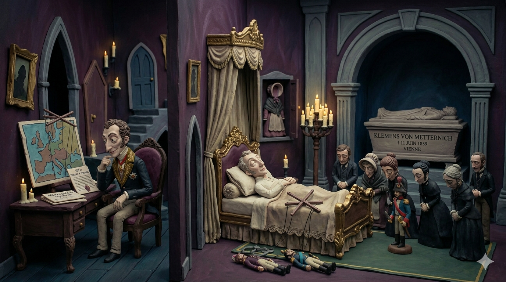

一、 權力的崛起與均勢政策
梅特涅出生於科布倫茨的貴族家庭，曾在多所名校學習法律、歷史與外交。 早年目睹法國大革命帶來的暴亂，使他終生對革命思想抱持痛恨。 他憑藉著高超的外交手段，在維也納會議上積極推行「大國均勢」政策，調和列強矛盾，鞏固了歐洲舊秩序。
▲ 梅特涅在維也納會議中運籌帷幄，操作歐洲政治天平 [cite: 1]
他不僅是「神聖同盟」的核心人物，更在1821年出任奧地利首相，推行被稱為「梅特涅體系」的保守主義政治主張， 對內實行專制，加強書刊檢查，嚴格監督大學，成了復辟勢力的總代表 [cite: 1]。
二、 革命浪潮與亡命天涯
1848年，奧地利爆發資產階級民主革命，群眾要求實行憲政。 這位曾統治歐洲政局數十年的保守主義教父，最終在革命聲浪中倒台。 為了躲避憤怒的人群，他被迫穿上女裝，搭乘洗衣店的馬車倉皇逃往英國 [cite: 1]。
▲ 1848年革命爆發，梅特涅被迫喬裝流亡海外 [cite: 1]
三、 餘暉與終章
流亡生活並未持續太久，梅特涅在1851年返回奧地利，並擔任斐迪南一世的顧問。 即便權力巔峰已過，他依然是奧地利政壇的老臣。1859年6月11日，這位深刻影響19世紀歐洲版圖的人物在維也納病逝 [cite: 1]。

▲ 1859年，梅特涅於維也納結束了他傳奇且備受爭議的一生 [cite: 1]